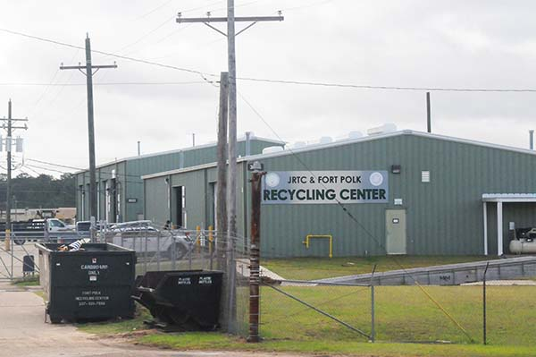
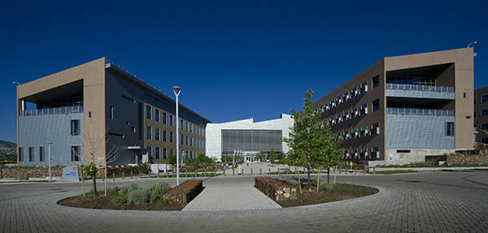

Federal agencies and military installations across the country are taking action now to implement the President's Federal Sustainability Plan and Executive Order 14XXX. Scroll down to learn how agencies are leading by example or click the interactive map, using the filter to find projects based on your interest.
DOD's Edwards Air Force Base Solar PV Array
Edwards Air Force Base is constructing one of the largest solar PV array projects in the country.
Project Elements:
 Carbon Pollution-Free Electricity
Carbon Pollution-Free Electricity
 Domestic and Global Partnerships
Domestic and Global Partnerships
 Strengthening the Resilience of Operations and Infrastructure
Strengthening the Resilience of Operations and Infrastructure
Description: The Department of Defense (DOD) Edwards Air Force Base is currently constructing one of the largest solar photovoltaic (PV) array projects in the country and the largest solar project ever for DOD at 530 megawatts with 3 gigawatts of battery energy storage on up to 4,000 acres of non-excess underutilized property.
The Edwards Air Force Base (EAFB) Solar Enhanced Use Lease (EUL) Project is a result of a successful partnership between DOD, the California State Historic Preservation Office, Kern County, the Tejon and San Manuel Band of Mission Indian Native American Tribes and Terra-Gen Development Company, LLC, (Terra-Gen).
Under the Air Force's Enhanced Use Lease (EUL) program, special purpose entities managed by private developer Terra-Gen will incrementally lease and develop the property in exchange for in-kind consideration in the form of cash to be used in part for future resilient energy projects.
This project will be completed through multiple site development leases, with the first increment in the first site development lease to be completed by the end of 2021. This phase involves constructing the power substation, the first phase of the solar array, and roads. Completion of the entire EUL project will be completed by the end of 2022.
Climate Resilience Features: The project features scalable battery energy storage and redundant energy sources.
Impacts: The EAFB EUL project could provide power for an average of 238,000 homes in California, yielding up to $80 million in EAFB cash rent throughout its 35-year lease. This project will employ 1,000 union and non-craft labor.
Status: The project is expected to be completed by December 2022.
DOD's Efforts to Enhance Climate Literacy within USACE Workforce
To improve climate literacy among its workforce, the U.S. Army Corps of Engineers is engaging and educating at all levels.
Project Elements:
 Engaging, Educating, and Training the Federal Workforce
Strengthening the Resilience of Operations and Infrastructure
Engaging, Educating, and Training the Federal Workforce
Strengthening the Resilience of Operations and Infrastructure
Description: To improve climate literacy among its workforce, the U.S. Army Corps of Engineers (USACE) is employing a multi-pronged strategy:
- For managerial staff, the USACE is creating a climate change module addressing climate impacts to its mission, climate preparedness, resilience, adaptation, and mitigation strategies, and sustainability education will be added to USACE Commanders', General Officers and Senior Executive Service Members' trainings;
- USACE is also drafting an additional "Climate 101 training" for its Commanders;
- For the entire USACE workforce, social scientists will be engaged to develop tiered, innovative communication tools to support mainstreaming of climate change adaptation as appropriate into the existing roles and responsibilities of practitioners, supervisors, and managers;
- Experience with past division-level trainings will be leveraged to expand practitioner-level training on climate preparedness and resilience policies, guidance, tools, and approaches to all USACE divisions. For example, over 160 personnel from the Northwestern and the Great Lakes and Ohio River USACE Divisions participated in climate training in March 2021. Similar training courses for other USACE Divisions are now being developed, including Division-specific workshops to enable focused analysis of climate impacts to existing and planned projects.
The USACE staff will base its climate preparedness and resilience tools and training on climate science, data, and projections developed by USACE as part of the U.S. Global Change Research program. These tools and certain portions of these training products will be made publicly available for others to use.
Impacts: Existing messaging, training, and interagency partnering on climate topics will help USACE continue to integrate climate adaptation and resilience into USACE missions, operations, and projects. In the past, mainstreaming climate adaptation based on the latest actionable climate science has helped the USACE ensure reliable project performance and mission operations despite changing and uncertain conditions.
Status: On-going
DOD's Fort Polk Sustainability Program
Fort Polk's award-winning program to reduce its energy and water consumption, conserve resources, and minimize waste.
Project Elements:
Description: Through dedicated efforts and senior leadership support, Fort Polk successfully improved its energy and water conservation, reduced its greenhouse gas emissions, and decreased the amount of landfill waste. These efforts include:
- Making a series of energy efficiency improvements include replacing outdated chillers and boilers, overhauling building automation controls and lighting, and recommissioning old facilities no longer operating as designed that has resulted in more than $4 million in energy cost savings annually;
- No longer using potable water for wastewater treatment plant operational processes and began using treated wastewater, thus conserving millions of gallons of potable drinking water;
- Reclaiming 270 gallons of solvent and 4,600 gallons of antifreeze for reuse, saving the installation more $62,500 in hazardous waste disposal costs;
- Registering 18 projects with the U.S. Green Buildings Council (USGBC), which includes eight USGBC Leadership in Energy and Environmental Design Gold-certified buildings.
- Through these efforts, the Installation was awarded the 2020 Secretary of the Army Environmental Awards Program in Sustainability for a Non-Industrial Installation.
Climate Resilience Features: In addition to its on-going sustainability program, Fort Polk also works to educate Soldiers and their families on their role as environmental stewards through a multi-media environmental education outreach program which includes videos and events.
Impacts: Fort Polk improved is saving more than $4 million annually through reduced waste disposal fees and utility bills as well as reducing carbon pollution associated with electricity generation.
Status: This project captures efforts undertaken in 2020.
DOD's Marine Corps Air Station Microgrid Project
By installing a microgrid, Marine Corps Air Station Yuma is resilient to local power interruptions and able to save $300,000 annually.
Project Elements:
Carbon Pollution-Free Electricity
Domestic and Global Partnerships
Strengthening the Resilience of Operations and Infrastructure
Description: The Department of Defense's Marine Corps Air Station (MCAS) Yuma partnered with the Arizona Public Service Company (APS) to construct a 25-megawatt microgrid on approximately 12 acres of underutilized DOD land. Should the local grid go down, the MCAS Yuma microgrid will provide enough back-up power to cover all of the energy requirements of the installation. The microgrid also exports to the grid any excess power it produces. The microgrid is able to forecast outages or events and starts up if it senses that something that would harm the base.
In exchange for the use of DON land, APS owns and operates the microgrid facility at MCAS Yuma and provides in-kind consideration in the form of the microgrid's backup power during grid outages, ensuring no interruptions to MCAS Yuma's mission.
Climate Resilience Features: During times of peak energy loads, such as hot summer afternoons, the microgrid can provide its backup power to the grid for APS customers to use.
Impacts: The microgrid has prevented over 73 power interruptions to the installation since spring 2017, eliminating the need to cancel any military training due to power quality issues. The microgrid has also eliminated most backup power generators and has saved the installation $300,000 annually in maintenance costs. MCAS Yuma has recovered its investment five-fold and will continue to accrue a return on the investment.
Status: This project was completed in 2016.
DOD's Naval Construction Battalion Center
The Naval Construction Battalion Center leveraged Department of Defense's (DOD) Enhanced Use Lease Program to build a solar PV array and microgrid so that it can continue to be mission ready during extreme weather.
Project Elements:
Carbon Pollution-Free Electricity
Domestic and Global Partnerships
Strengthening the Resilience of Operations and Infrastructure
Description: The Department of Defense's (DOD) Naval Construction Battalion Center partnered with Southern Company/Mississippi Power through the Department's Enhanced Use Lease (EUL) program. In exchange for a 15-acre parcel of underutilized DOD land at the installation, the utility built a 3.5 -megawatt solar photovoltaic (PV) array that provides enough power for 450 homes. DOD and the utility also worked together to construct a microgrid system that provides power from the PV array and a state-of-the-art U.S. Environmental Protection Agency Tier 4 diesel generator system with energy storage to power the base during blackouts. Larger diesel generators eliminate the need for multiple less-efficient building backup generators.
Climate Resilience Features: This project incorporated distributed energy resources which support the NCBC mission during resiliency events, such as extreme weather events like the 2020 Hurricane Zeta that caused the base to lose power. The microgrid would provide the backup power and blackstart capability required to weather these events.
Impacts: The 4.2 MW PV array provides enough carbon pollution-free power for 450 homes. The microgrid uses advanced controls to optimize solar and battery storage use—minimizing the use of costly diesel fuel, eliminating the need for multiple less-efficient building backup generators, and reducing the base's carbon footprint.
Status: This project was completed in August 2021.
DOD's Pacific Missile Range Facility Solar PV Project
A mutually-beneficial opportunity partnership between Department of Defense (DOD) and a local utility paved the way for a new 19.3-MW solar facility and a 70 MWh battery energy storage system.
Project Elements:
Carbon Pollution-Free Electricity
Domestic and Global Partnerships
Strengthening the Resilience of Operations and Infrastructure
Description: The Department of Defense (DOD) Pacific Missile Range Facility (PMRF) partnered with the Kauai Island Utility Cooperative (KIUC) through the Department's Enhanced Use Lease (EUL) program on a solar photovoltaic (PV) array project build on underutilized land at the base. This EUL project includes a 19.3 Megawatts utility-scale photovoltaic (PV) array and a 70-Megawatt Hour (MWh) Battery Energy Storage System (BESS).
Climate Resilience Features: This project incorporated distributed energy resources which supports the local base and regional grid stability by shifting the PMRF peak load demand to the new distributed energy resource and energy storage infrastructure. While DOD will have priority to meet sporadic operational demand, the power will flow to the island's grid under routine conditions. Output will be controlled by KIUC and used as needed, typically to meet morning and evening peak demand, but also to provide firm power throughout the day and spinning reserve.
Impacts: This new, renewable electricity generation is expected to provide ~7% of Kauai Island Utility Cooperative annual energy needs while providing increased resiliency/reliability to PMRF. In the event of utility grid outage, the renewable generation provides an islanded power controlled with a microgrid system to PMRF.
DOD will recover its investment of $1.3 million five-fold upon acceptance of the project at the end of the the 2-year construction period and continue to accrue savings on reduced energy demand costs multiple times throughout the 25-year performance period.
This project also supports the State of Hawaii's renewable energy mandate and reduces the need to import diesel fuel from the U.S. mainland.
Status: The project is expected to be completed Summer 2022.
DOD's Parris Island Comprehensive Energy Security Project
The Marine Corps Recruit Depot Parris Island has slashed $7 million of its annual energy bill by leveraging an energy savings performance contract.
Project Elements:
Carbon Pollution-Free Electricity
 Green Building
Strengthening the Resilience of Operations and Infrastructure
Domestic and Global Partnerships
Green Building
Strengthening the Resilience of Operations and Infrastructure
Domestic and Global Partnerships
Description: Through $91 million energy savings performance contract (ESPC) with Ameresco, DOD's Marine Corps Recruit Depot at Parris Island was able to finance a series of energy infrastructure upgrades and energy resilience measures using the savings generated by traditional energy conservation measures, including:
- Building nearly 10-megawatt (MW) of on-site distributed sources of generation, including a 3.5 MW combined heat and power plant, a 6.7 MW solar photovoltaic (PV) array, 3.6 MW of diesel backup generation, and a 4 MW battery energy storage system that captures up to 12% of excess solar generation.
- Making upgrades to chiller equipment and other HVAC infrastructure to reduce both energy consumption and maintenance; and,
- Making updates to its water infrastructure to reduce site water usage by 25%.
Climate Resilience Features: To protect against energy disruption due to storm surge and water inundation, the combined heat and power plant was constructed above the 100-year floodplain. The fast load-shedding microgrid control system allows for discretionary distribution of power across the grid to where it is most critical, along with "islanding" capabilities from the commercial grid, providing full back-up power and steam requirements for the base.
Impacts: This project has yielded nearly $7 million in annual energy savings, cut the installation's energy demand by 35%, and cut the installation's water demand by 25%. Further, this project will reduce or eliminate installation energy outages and give the installation the capacity to sustain its critical training operations when the grid goes down.
Status: This project was completed in 2019.
DOE's Net Zero Emissions Building
The Department of Energy (DOE) provided the model to follow with its groundbreaking net-zero emissions building in Golden, Colorado.
Project Elements:
 Net-Zero Emissions
Net-Zero EmissionsDescription: The Department of Energy's National Renewable Energy Laboratory Research Support Facility is a 442,900-square foot building employing groundbreaking energy-efficiency with a 2.5-megawatt solar photovoltaic array and solar thermal technologies to achieve net-zero emissions status. The building received a U.S. Green Building Council LEED Platinum certification in 2011 and was the largest net-zero building in the world at the time.
Building features also include:
- designed to perform 50% more efficiently than a commercial building constructed to the code at the time,
- triple glazed windows,
- daylighting design with south facing windows that reflect sunlight deep into the space,
- window controls for thermal load management,
- radiant heating and cooling, transpired solar collectors, energy efficient elevators, energy-efficient data center
- roof drainage to irrigate rain gardens,
Impacts: On June 23, 2011, the RSF had its first day of net-zero energy. The building continued to operate at net zero energy and achieved the LEED Zero Energy certification in February 2020. In 2015 the RSF achieved a SITES certification for its sustainable landscape features.
Status: This project was completed in 2010.
DOT's John A. Volpe Transportation Systems Center
From urban sprawl to leading low-emission, energy efficient building of the future, Department of Transportation's (DOT) re-imagined John A. Volpe Transportation Systems Center provides a model for others to follow.
Project Elements:
Carbon Pollution-Free Electricity
Domestic and Global Partnerships
 Environmental Justice and Equity
Green Buildings
Strengthening the Resilience of Operations and Infrastructure
Environmental Justice and Equity
Green Buildings
Strengthening the Resilience of Operations and Infrastructure
 Zero-Emissions Fleet
Zero-Emissions Fleet

Description: Through a first-of-its-kind property exchange partnership between the General Services Administration, the Department of Transportation's (DOT) John A Volpe Transportation Systems Center (Volpe Center), and the Massachusetts Institute of Technology (MIT), the. DOT will gain a new state-of-the-art facility on four acres of the Volpe site parcel and MIT was selected to redevelop the rest of the under-utilized property.
The project collapses six existing separate buildings and surface parking lots into one 400,000 square foot Federal building housing [insert name of agencies here]. Oriented to maximize energy efficiency, the new Federal building will include:
- underground parking and over 100 bicycle spaces
- roof-mounted solar panels, heat recovery chillers,
- electric vehicle (EV) charging stations,
- a rain water reclamation and reuse system, and,
- a stormwater management system.
DOT is also evaluating operational aspects such as cafeteria operations and waste management to maximize opportunities to continue to enhance sustainability.
Climate Resilience Features: The new Volpe Center will include several climate-ready features:
- an above-grade emergency back-up generators located on the 13th floor mechanical level, and
- an above-grade data center.
Environmental Justice and Equity: MIT's proposal, if approved, will transform the remaining 10 acres of the Volpe parcel into a mixed-use development including approximately 1,400 new residential units, including 280 permanently subsidized affordable units and 20 middle-income units; 1.7 million square feet of lab, research, and office space; a community center, and 3.5 acres of publicly beneficial open space.
Impacts: As a result of the project, the Federal footprint on the site will be reduce from approximately 14 acres to 4 acres, and from six buildings to one building—reducing operating costs and greenhouse gas emissions.
Status: In October 2019, the DOT held a groundbreaking ceremony for its new John A. Volpe Transportation Systems Center (Volpe). The new Volpe center is scheduled for occupancy in August 2023.
Learn more about the John A. Volpe Transportation Systems Center.

730 Jackson Place N.W.
Washington, D.C. 20503